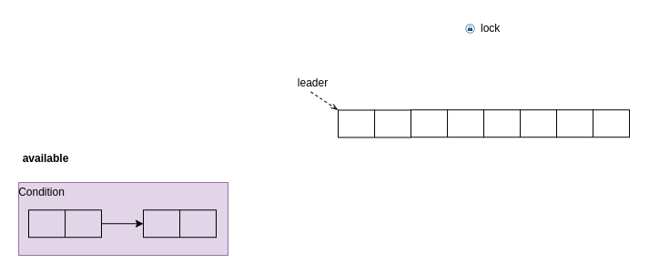

Ch12-Java Collections 之 DelayQueue
March 10, 2020
java.util.concurrent.DelayQueue

DelayQueue 其实就是在每次往优先级队列中添加元素，然后以元素的 delay/过期值作为排序的因素，以此来达到先过期的元素会排在队首，每次从队列里取出来都是最先要过期的元素
1. 添加 #
| 操作 | 操作成功 | 操作失败 |
|---|---|---|
| offer | 返回 true | 队列已满，扩容，插入，返回 true |
| add | 返回 true | 队列已满，扩容，插入，返回 true |
| put | 无返回 | 队列已满，扩容，插入，无返回 |
1.1 put 说明 #
首先获取 lock 对队列进行进行加锁，把元素插入到优先级队列中，如果元素位于队首，设置 leader 为空，唤醒所有 available 中的线程。最后释放 lock。
2. 获取 #
| 操作 | 操作成功 | 操作失败 |
|---|---|---|
| poll | 返回元素 | 队列为空，阻塞 |
| take | 返回元素 | 队列为空，阻塞 |
2.1 take 说明 #
- 执行加锁操作
- 取出优先级队列元素 q 的队首
- 如果元素q的队首/队列为空,阻塞请求
- 如果元素 q 的队首 (first) 不为空，获得这个元素的 delay 时间值
- 如果 first 的延迟 delay 时间值为 0 的话，说明该元素已经到了可以使用的时间，调用 poll 方法弹出该元素，跳出方法
- 如果 first 的延迟 delay 时间值不为 0 的话，释放元素 first 的引用，避免内存泄露
- 判断 leader 元素是否为空，不为空的话阻塞当前线程
- 如果 leader 元素为空的话，把当前线程赋值给 leader 元素，然后阻塞 delay 的时间，即等待队首到达可以出队的时间，在 finally 块中释放 leader 元素的引用
- 循环执行从 1~8 的步骤
- 如果 leader 为空并且优先级队列不为空的情况下 (判断还有没有其他后续节点),调用 signal 通知其他的线程
- 执行解锁操作